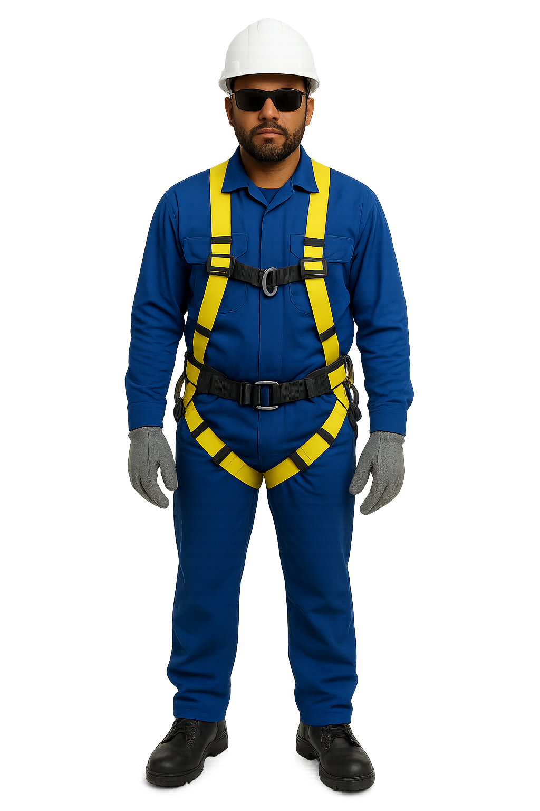

Trilha do Conector 🚀
📖 Módulo 2: Segurança em Primeiro Lugar
A segurança não é negociável. Sua vida e a do seu colega são a nossa maior prioridade. O cumprimento rigoroso destas normas é obrigatório.
2.1. EPIs - Seus Melhores Amigos
Você DEVE usar todos os EPIs fornecidos pela Ti.Net durante todo o tempo de trabalho.
- Capacete com Jugular: Protege contra quedas de objetos. A jugular (tira no queixo) impede que ele caia.
- Óculos de Proteção: OBRIGATÓRIO ao manusear a fibra. Fragmentos de fibra são minúsculos e afiados como vidro, podendo causar lesões permanentes nos olhos.
- Luvas de Proteção: Protegem contra cortes, farpas e sujeira.
- Botas de Segurança: Protegem os pés e dão firmeza.
- Cinto de Segurança tipo Paraquedista: Essencial para o trabalho em altura.
- Uniforme e Colete de Alta Visibilidade: Garante que você seja visto, prevenindo acidentes.
💡 Simulador: Vista o EPI
Arraste o nome de cada EPI da lista até o ponto correspondente na imagem para equipar o técnico.
Capacete com Jugular
Óculos de Proteção
Cinto Paraquedista
Luvas de Proteção
Botas de Segurança

🖼️ 2.2. Cenário de Risco Interativo
Clique nos pontos de perigo na imagem para destacar o alerta correspondente ao lado.

Risco Elétrico (NR-10): Mantenha distância segura da rede elétrica. NUNCA trabalhe sob chuva forte, tempestades ou raios.
Cuidados com a Fibra: Fragmentos de vidro devem ser descartados em recipiente apropriado. Nunca olhe diretamente para a ponta de um cabo; a luz do laser é invisível e perigosa.
Trabalho em Altura (NR-35): Inspecione a escada. Ajude a estabilizá-la em base firme. Use sempre cones para sinalizar a área de trabalho.
💡 Simulado - Módulo 2
1. Por que é OBRIGATÓRIO o uso de óculos de proteção ao manusear fibra óptica?
2. Em caso de chuva forte ou raios, o trabalho em altura deve continuar para cumprir o cronograma.